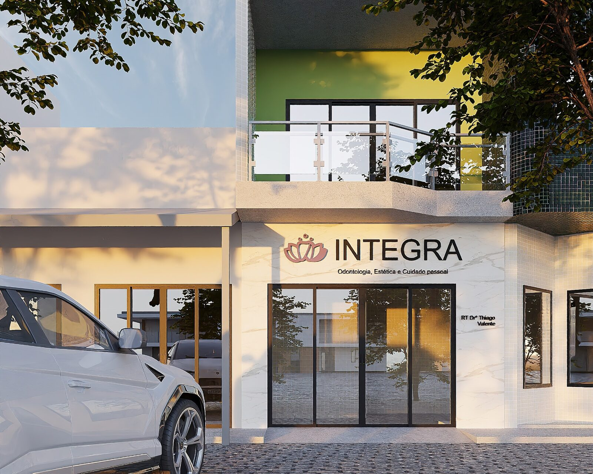
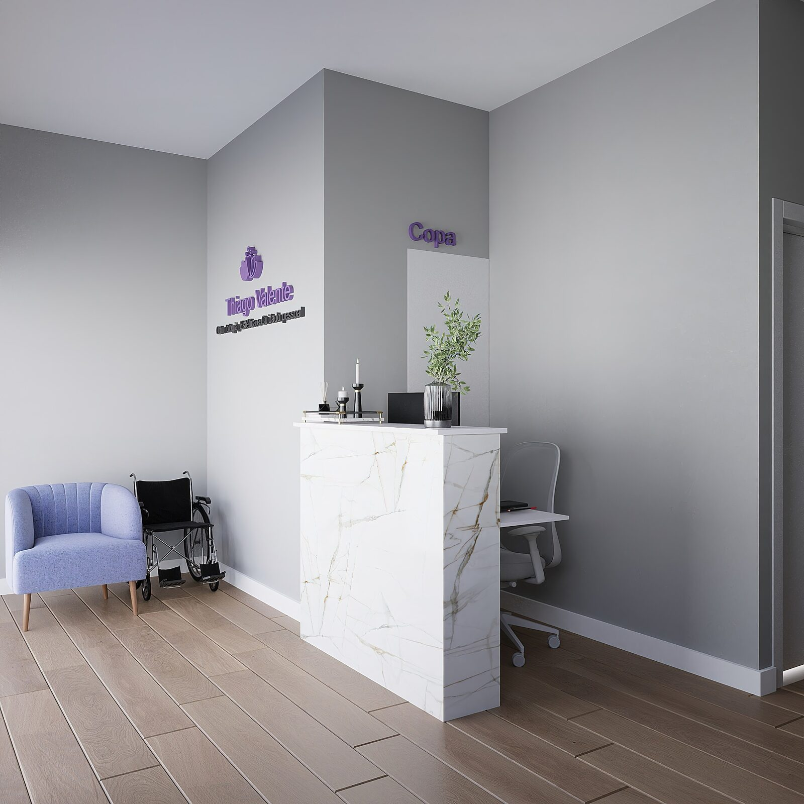
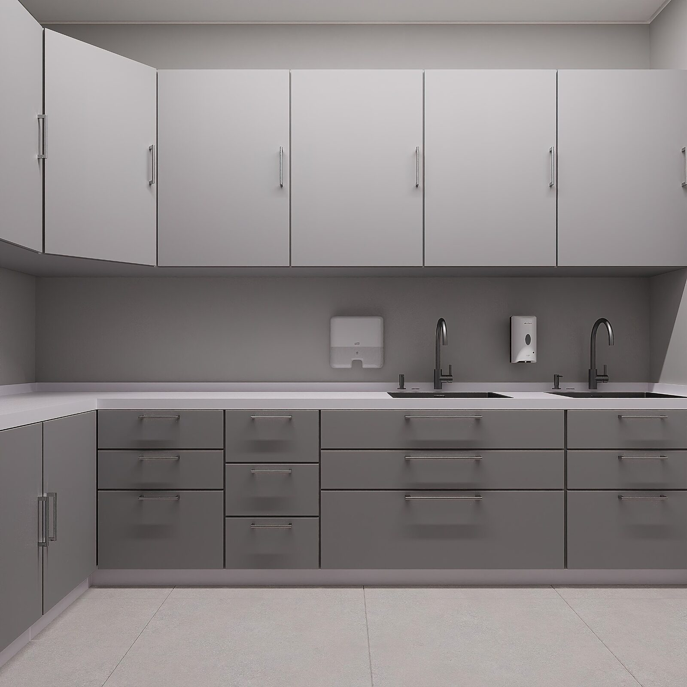
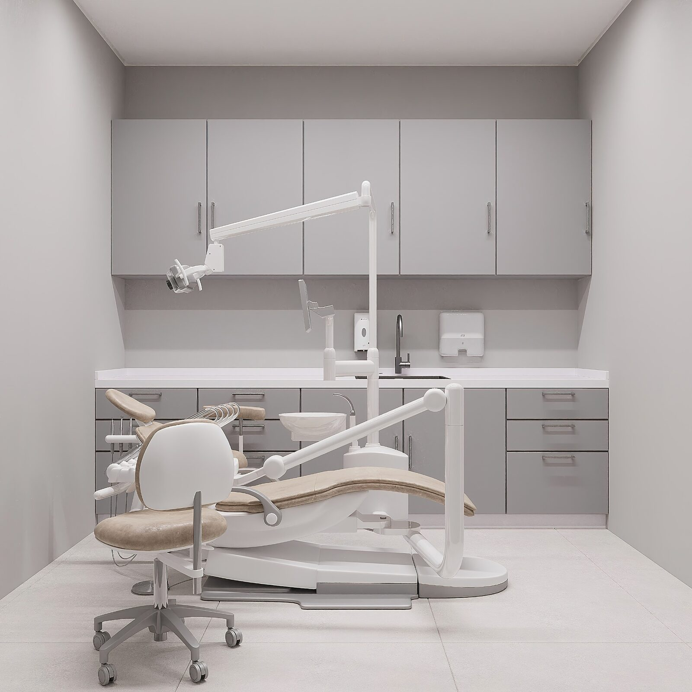
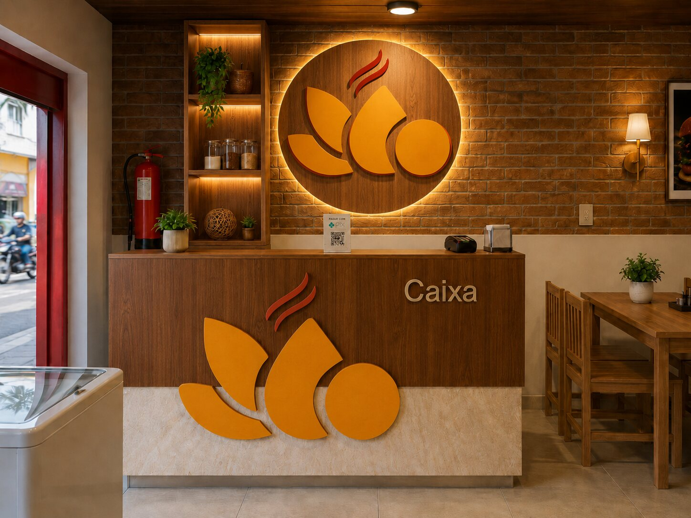
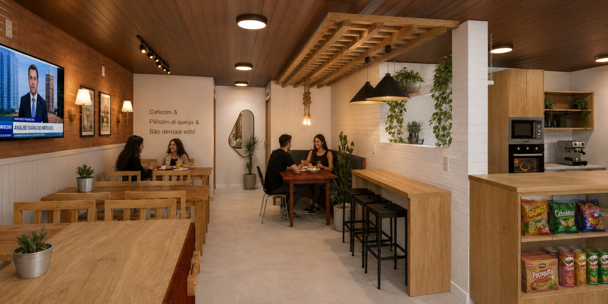
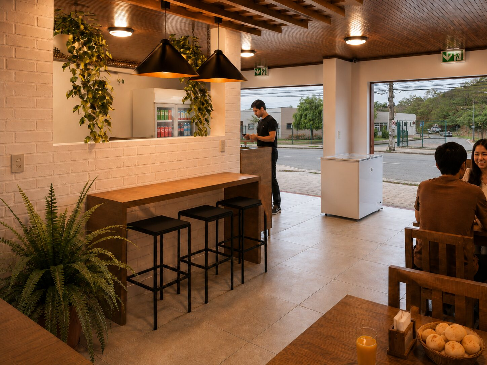
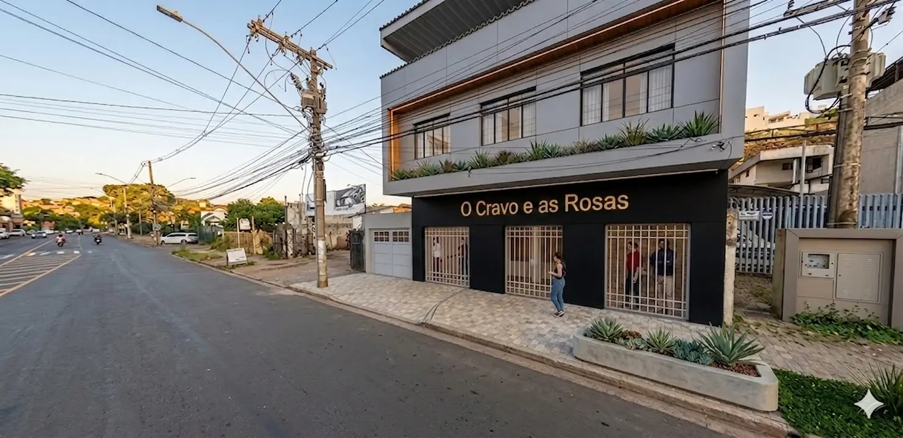
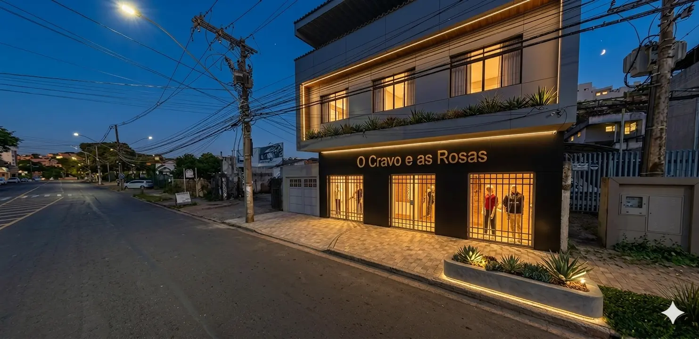

Reforma e adequação · Clínica odontológica e estética
Aprovado pela Vigilância Sanitária Municipal
O projeto contemplou a reforma e a adequação dos espaços da clínica para atendimento odontológico e estético, com organização funcional dos ambientes, acessibilidade, condições de higiene, esterilização e soluções compatíveis com as exigências sanitárias da atividade.
A proposta incluiu recepção, dois consultórios, área de esterilização, copa, depósito de materiais de limpeza e sanitário acessível. Desenvolvido pela Vértice Arquitetura e Avaliações, o projeto arquitetônico foi aprovado pela Vigilância Sanitária Municipal como parte do processo de licenciamento sanitário do estabelecimento.

Fachada

Recepção

Área clínica e esterilização

Consultório odontológico
Projetos comerciais
Família Lanchonete
Reforma e adequação · Serviço de alimentação
O projeto da Família Lanchonete foi desenvolvido para transformar um imóvel existente em um espaço acolhedor, funcional e preparado para a rotina de um serviço de alimentação. A proposta organizou os ambientes de atendimento, consumo, caixa, cozinha, armazenamento, depósito de materiais de limpeza e sanitários, buscando melhorar a circulação de clientes e funcionários, reduzir interferências entre os fluxos e favorecer as condições de higiene e segurança dos alimentos.
Na área destinada ao público, foram adotados elementos como madeira, tijolos aparentes, iluminação quente e vegetação, criando uma atmosfera confortável e reforçando a identidade visual da lanchonete. O mobiliário foi distribuído para aproveitar o espaço disponível e oferecer diferentes formas de permanência, com mesas, bancadas e assentos integrados ao ambiente.
Nas áreas operacionais, foram consideradas superfícies de fácil higienização, pontos específicos para lavagem das mãos e dos utensílios, armazenamento separado de alimentos e produtos de limpeza, além de ventilação e exaustão compatíveis com as atividades de preparo.
O resultado foi um projeto que integrou estética, funcionalidade, organização dos fluxos e requisitos sanitários, proporcionando melhores condições para o atendimento ao público e para o trabalho da equipe.

Caixa e identidade visual

Salão e área de consumo

Bancada e área de permanência
O Cravo e as Rosas 2.0
Projeto comercial · Loja · Ipatinga/MG
O projeto arquitetônico da loja O Cravo e as Rosas 2.0, em Ipatinga/MG, foi desenvolvido para criar um ambiente comercial funcional, organizado e visualmente atrativo, valorizando a exposição dos produtos e a experiência dos clientes.
A distribuição interna foi planejada com uma ampla área de vendas, vitrines voltadas para a fachada, caixa, provadores, estoque, escritório e sanitário. Essa setorização favorece a circulação, o atendimento e a rotina operacional da equipe, mantendo os ambientes de apoio integrados ao funcionamento da loja.
Na composição do espaço, foi previsto piso vinílico amadeirado, contribuindo para uma atmosfera acolhedora. O letreiro em ACM e as vitrines reforçam a identidade visual e a presença comercial do estabelecimento.
O projeto equilibrou estética, aproveitamento da área e praticidade, resultando em uma proposta contemporânea e adequada ao uso comercial.

Fachada · Vista diurna

Fachada · Vista noturna
Projetos residenciais
Conforto pensado para a rotina.
Esta área receberá imagens e breves apresentações de projetos residenciais e de interiores.